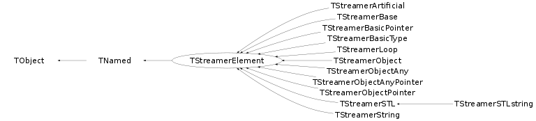

class TStreamerElement: public TNamed
Function Members (Methods)
public:
| TStreamerElement() | |
| TStreamerElement(const char* name, const char* title, Int_t offset, Int_t dtype, const char* typeName) | |
| virtual | ~TStreamerElement() |
| void | TObject::AbstractMethod(const char* method) const |
| virtual void | TObject::AppendPad(Option_t* option = "") |
| virtual void | TObject::Browse(TBrowser* b) |
| virtual Bool_t | CannotSplit() const |
| static TClass* | Class() |
| virtual const char* | TObject::ClassName() const |
| virtual void | TNamed::Clear(Option_t* option = "") |
| virtual TObject* | TNamed::Clone(const char* newname = "") const |
| virtual Int_t | TNamed::Compare(const TObject* obj) const |
| virtual void | TNamed::Copy(TObject& named) const |
| virtual void | TObject::Delete(Option_t* option = "")MENU |
| virtual Int_t | TObject::DistancetoPrimitive(Int_t px, Int_t py) |
| virtual void | TObject::Draw(Option_t* option = "") |
| virtual void | TObject::DrawClass() constMENU |
| virtual TObject* | TObject::DrawClone(Option_t* option = "") constMENU |
| virtual void | TObject::Dump() constMENU |
| virtual void | TObject::Error(const char* method, const char* msgfmt) const |
| virtual void | TObject::Execute(const char* method, const char* params, Int_t* error = 0) |
| virtual void | TObject::Execute(TMethod* method, TObjArray* params, Int_t* error = 0) |
| virtual void | TObject::ExecuteEvent(Int_t event, Int_t px, Int_t py) |
| virtual void | TObject::Fatal(const char* method, const char* msgfmt) const |
| virtual void | TNamed::FillBuffer(char*& buffer) |
| virtual TObject* | TObject::FindObject(const char* name) const |
| virtual TObject* | TObject::FindObject(const TObject* obj) const |
| Int_t | GetArrayDim() const |
| Int_t | GetArrayLength() const |
| TClass* | GetClass() const |
| virtual TClass* | GetClassPointer() const |
| virtual Option_t* | TObject::GetDrawOption() const |
| static Long_t | TObject::GetDtorOnly() |
| virtual Int_t | GetExecID() const |
| Double_t | GetFactor() const |
| virtual const char* | GetFullName() const |
| virtual const char* | TObject::GetIconName() const |
| virtual const char* | GetInclude() const |
| Int_t | GetMaxIndex(Int_t i) const |
| virtual ULong_t | GetMethod() const |
| virtual const char* | TNamed::GetName() const |
| TClass* | GetNewClass() const |
| Int_t | GetNewType() const |
| virtual char* | TObject::GetObjectInfo(Int_t px, Int_t py) const |
| static Bool_t | TObject::GetObjectStat() |
| Int_t | GetOffset() const |
| virtual Option_t* | TObject::GetOption() const |
| virtual Int_t | GetSize() const |
| TMemberStreamer* | GetStreamer() const |
| virtual const char* | TNamed::GetTitle() const |
| Int_t | GetTObjectOffset() const |
| Int_t | GetType() const |
| const char* | GetTypeName() const |
| const char* | GetTypeNameBasic() const |
| virtual UInt_t | TObject::GetUniqueID() const |
| Double_t | GetXmax() const |
| Double_t | GetXmin() const |
| virtual Bool_t | TObject::HandleTimer(TTimer* timer) |
| virtual Bool_t | HasCounter() const |
| virtual ULong_t | TNamed::Hash() const |
| virtual void | TObject::Info(const char* method, const char* msgfmt) const |
| virtual Bool_t | TObject::InheritsFrom(const char* classname) const |
| virtual Bool_t | TObject::InheritsFrom(const TClass* cl) const |
| virtual void | Init(TObject* obj = 0) |
| virtual void | TObject::Inspect() constMENU |
| void | TObject::InvertBit(UInt_t f) |
| virtual TClass* | IsA() const |
| virtual Bool_t | IsaPointer() const |
| virtual Bool_t | IsBase() const |
| virtual Bool_t | TObject::IsEqual(const TObject* obj) const |
| virtual Bool_t | TObject::IsFolder() const |
| virtual Bool_t | IsOldFormat(const char* newTypeName) |
| Bool_t | TObject::IsOnHeap() const |
| virtual Bool_t | TNamed::IsSortable() const |
| Bool_t | TObject::IsZombie() const |
| virtual void | ls(Option_t* option = "") const |
| void | TObject::MayNotUse(const char* method) const |
| virtual Bool_t | TObject::Notify() |
| void | TObject::Obsolete(const char* method, const char* asOfVers, const char* removedFromVers) const |
| static void | TObject::operator delete(void* ptr) |
| static void | TObject::operator delete(void* ptr, void* vp) |
| static void | TObject::operator delete[](void* ptr) |
| static void | TObject::operator delete[](void* ptr, void* vp) |
| void* | TObject::operator new(size_t sz) |
| void* | TObject::operator new(size_t sz, void* vp) |
| void* | TObject::operator new[](size_t sz) |
| void* | TObject::operator new[](size_t sz, void* vp) |
| virtual void | TObject::Paint(Option_t* option = "") |
| virtual void | TObject::Pop() |
| virtual void | TNamed::Print(Option_t* option = "") const |
| virtual Int_t | TObject::Read(const char* name) |
| virtual void | TObject::RecursiveRemove(TObject* obj) |
| void | TObject::ResetBit(UInt_t f) |
| virtual void | TObject::SaveAs(const char* filename = "", Option_t* option = "") constMENU |
| virtual void | TObject::SavePrimitive(ostream& out, Option_t* option = "") |
| virtual void | SetArrayDim(Int_t dim) |
| void | TObject::SetBit(UInt_t f) |
| void | TObject::SetBit(UInt_t f, Bool_t set) |
| virtual void | TObject::SetDrawOption(Option_t* option = "")MENU |
| static void | TObject::SetDtorOnly(void* obj) |
| virtual void | SetMaxIndex(Int_t dim, Int_t max) |
| virtual void | TNamed::SetName(const char* name)MENU |
| virtual void | TNamed::SetNameTitle(const char* name, const char* title) |
| virtual void | SetNewClass(TClass* cl) |
| virtual void | SetNewType(Int_t dtype) |
| static void | TObject::SetObjectStat(Bool_t stat) |
| virtual void | SetOffset(Int_t offset) |
| virtual void | SetSize(Int_t dsize) |
| virtual void | SetStreamer(TMemberStreamer* streamer) |
| virtual void | TNamed::SetTitle(const char* title = "")MENU |
| virtual void | SetTObjectOffset(Int_t tobjoffset) |
| virtual void | SetType(Int_t dtype) |
| virtual void | SetTypeName(const char* name) |
| virtual void | TObject::SetUniqueID(UInt_t uid) |
| virtual void | ShowMembers(TMemberInspector& insp) |
| virtual Int_t | TNamed::Sizeof() const |
| virtual void | Streamer(TBuffer& b) |
| void | StreamerNVirtual(TBuffer& b) |
| virtual void | TObject::SysError(const char* method, const char* msgfmt) const |
| Bool_t | TObject::TestBit(UInt_t f) const |
| Int_t | TObject::TestBits(UInt_t f) const |
| virtual void | Update(const TClass* oldClass, TClass* newClass) |
| virtual void | TObject::UseCurrentStyle() |
| virtual void | TObject::Warning(const char* method, const char* msgfmt) const |
| virtual Int_t | TObject::Write(const char* name = 0, Int_t option = 0, Int_t bufsize = 0) |
| virtual Int_t | TObject::Write(const char* name = 0, Int_t option = 0, Int_t bufsize = 0) const |
protected:
| virtual void | TObject::DoError(int level, const char* location, const char* fmt, va_list va) const |
| void | TObject::MakeZombie() |
private:
| TStreamerElement(const TStreamerElement&) | |
| TStreamerElement& | operator=(const TStreamerElement&) |
Data Members
public:
| enum ESTLtype { | kSTL | |
| kSTLstring | ||
| kSTLvector | ||
| kSTLlist | ||
| kSTLdeque | ||
| kSTLmap | ||
| kSTLset | ||
| kSTLmultimap | ||
| kSTLmultiset | ||
| kSTLbitset | ||
| }; | ||
| enum { | kHasRange | |
| kCache | ||
| kRepeat | ||
| kRead | ||
| kWrite | ||
| kDoNotDelete | ||
| }; | ||
| enum TObject::EStatusBits { | kCanDelete | |
| kMustCleanup | ||
| kObjInCanvas | ||
| kIsReferenced | ||
| kHasUUID | ||
| kCannotPick | ||
| kNoContextMenu | ||
| kInvalidObject | ||
| }; | ||
| enum TObject::[unnamed] { | kIsOnHeap | |
| kNotDeleted | ||
| kZombie | ||
| kBitMask | ||
| kSingleKey | ||
| kOverwrite | ||
| kWriteDelete | ||
| }; |
protected:
| Int_t | fArrayDim | number of array dimensions |
| Int_t | fArrayLength | cumulative size of all array dims |
| TClass* | fClassObject | !pointer to class of object |
| Double_t | fFactor | !Conversion factor if a range is specified fFactor = (1<<nbits/(xmax-xmin) |
| Int_t | fMaxIndex[5] | Maximum array index for array dimension "dim" |
| TString | TNamed::fName | object identifier |
| TClass* | fNewClass | !new element class when reading |
| Int_t | fNewType | !new element type when reading |
| Int_t | fOffset | !element offset in class |
| Int_t | fSize | sizeof element |
| TMemberStreamer* | fStreamer | !pointer to element Streamer |
| Int_t | fTObjectOffset | !base offset for TObject if the element inherits from it |
| TString | TNamed::fTitle | object title |
| Int_t | fType | element type |
| TString | fTypeName | Data type name of data member |
| Double_t | fXmax | !Maximum of data member if a range is specified [xmin,xmax,nbits] |
| Double_t | fXmin | !Minimum of data member if a range is specified [xmin,xmax,nbits] |
Class Charts
{kind=link}
{kind=link}
{kind=link}
{kind=link}

Function documentation
TStreamerElement(const char* name, const char* title, Int_t offset, Int_t dtype, const char* typeName)
Create a TStreamerElement object.
Bool_t CannotSplit() const
const char * GetFullName() const
Return element name including dimensions, if any Note that this function stores the name into a static array. You should copy the result.
const char * GetTypeNameBasic() const
Return type name of this element in case the type name is not a standard basic type, return the basic type name known to CINT.
Bool_t IsOldFormat(const char* newTypeName)
The early 3.00/00 and 3.01/01 versions used to store dm->GetTypeName instead of dm->GetFullTypename if this case is detected, the element type name is modified.
void Update(const TClass* oldClass, TClass* newClass)
function called by the TClass constructor when replacing an emulated class by the real class
TStreamerElement(const TStreamerElement& )
TStreamerElement& operator=(const TStreamerElement& )